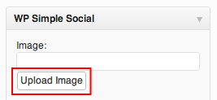
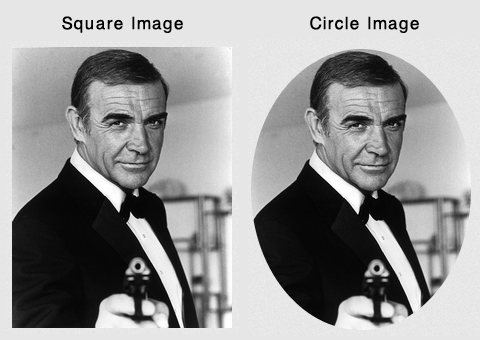
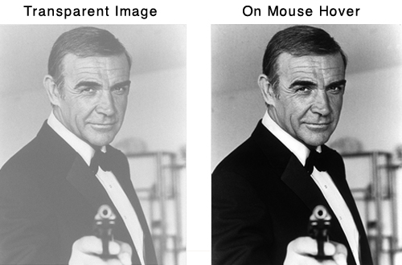
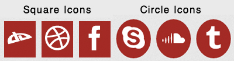
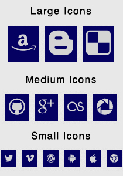
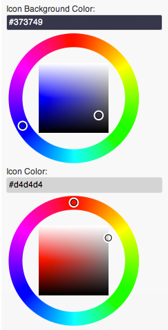
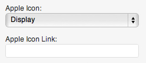
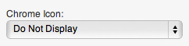

WP Simple Social
Getting Started With WP-Simple-Social
- Created: 09/19/2011
- latest Update: 09/19/2012
- By: Dallas Bass
- Email: dallasb86@gmail.com
Thank you for downloading my WordPress plugin. If you have any questions that are beyond the scope of this help file, please feel free to email via my user page contact form here. Thanks so much!
Description
WP-Simple-Social aims to give users a clean simple approach to creating a more social website.
WP-Simple-Social is a clean minimal plugin for WordPress that allows the user to add a "social" widget to their sidebar. The plugin allows the user three main sections to customize. There is the option to add a profile picture, an "about" paragraph or social icons. Each are is optional, so if you only want a profile picture but no icons or paragraph that is possible
WP-Simple-Social allows you to:
- Upload any picture size to your sidebar (dimensions constrained by sidebar size)
- Add a transparent hover effect to the image
- Add an "about" or "greeting" paragraph
- Choose to display up to twenty nine different social media icons
- Choose the color for the icon and the icon background
- Add a transparent hover effect to the icons
Features
- Clean minimal design
- Optional profile image
- Optional “About” paragraph or text
- Twenty nine optional social icons
- Optional transparency effects
- Icon font instead of individual images
- Retina device ready
The plugin includes the following icons:
- Amazon
- Blogger
- Delicious
- Deviant Art
- Dribbble
- Flickr
- Forrst
- Github
- Google Plus
- LastFM
- Picassa
- RSS
- Skype
- Sound Cloud
- Tumblr
- Vimeo
- WordPress
- Android
- Apple
- Chrome
- CSS3
- HTML5
- Internet Explorer
- Opera
- Windows
Installation
Using The WordPress Dashboard
- Navigate to the 'Add New' Plugin Dashboard
- Click on the “Upload” link
- Select `wp-simple-social.zip` from your computer
- Upload
- Activate the plugin on the WordPress Plugin Dashboard
Using FTP
- Extract `wp-simple-social.zip` to your computer
- Upload the `wp-simple-social` directory to your `wp-content/plugins` directory
- Activate the plugin on the WordPress Plugins dashboard
Getting Started
With the easy minimal design of WP-Simple-Social, you can add various features to your website sidebar, which will make your site more social. WP-Simple-Social comes in the form of a sidebar widget. After you have completed the instalation of the plugin, navigate to the "widgets" dashboard page in the WordPress administration backend. When you are on the "widgets" page, select the WP-Simple-Social widget and drag and drop it into your preferred sidebar area. Once you have added the widget to your sidebar, you will be ready to customize your WP-Simple-Social widget.
-
To upload a photo, click on the "Upload Image" button found underneath the "Image" input box. Use the WordPress image uploader to upload your image from your computer or to pick on image that you have already uploaded.
 -
Next, you have the option of selecting your image shape. The default shape is a square or rectangle but you can change the image shape to a circle using the "Select Your Image Shape" dropdown box.
 -
After you select your image shape, you can then choose to add the optional transparency to your image. If selected, this option will make your image appear transparent until the mouse is hovered over the image. When the mouse is hovered over the image, the image will then appear normal.
 -
Once you are finished with your image, you can write your "Bio" paragraph. Fill in the "Bio" textarea with your paragraph or, if you prefer not to have anything appear, delete any text in the "Bio" textarea box.
-
When you are finished with your bio, you can select your icon options. First, select what shape you want your icons to be. Like the image, your icons can either be a square or a circle. The default setting is square icons.
 -
The next step is to select your icon size. The icons can be displayed in three different sizes; small, medium, and large. Use the dropdown box to select your icon size.
 - After you pick your image size, you can choose whether or not you want your icons to have the transparent effect added to them. Like the image, the icons will be displayed at normal opacity when the mouse is hovered over them.
-
Your final icon options are the colors. There are two different color options for the icons. You can choose any color for the background of icon and any color for the actual icon. To select the icon color and icon background color, you can use the included color picker.
 - Now, you are ready to decide which icons you want to appear. For icons that ask for a username, only input your social network username and not the URL to your profile. For example, if you want to add the Twitter icon you should only enter your username, such as, "thisisdallas" and not the full URL, such as, "http://www.twitter.com/thisisdallas".
- If you do not want a certain icon to appear, delete any text inside the corolating input text box.
-
The last eight icons are presented in a different formt from the others. These icons are also optional but they also have the option of assigning a specfic website link to the icons. If you prefer to have the icon displayed but no website link attached to the icon, leave the "Icon Link" input text area blank.
 -
If you prefer to not have the last eight icons displayed, select the "Do Not Display" option for the icon dropbown list.
 - Once you are done customize your WP-Simple-Social widget, click the "Save" button to save your settings and display your WP-Simple-Social widget on your website.
Sources and Credits
Once again, thank you so much for purchasing this plugin. As I said at the beginning, I'd be glad to help you if you have any questions relating to this plugin. No guarantees, but I'll do my best to assist. If you have a more general question relating to the plugins on ThemeForest, you might consider visiting the forums and asking your question in the "Item Discussion" section.
Dallas Bass